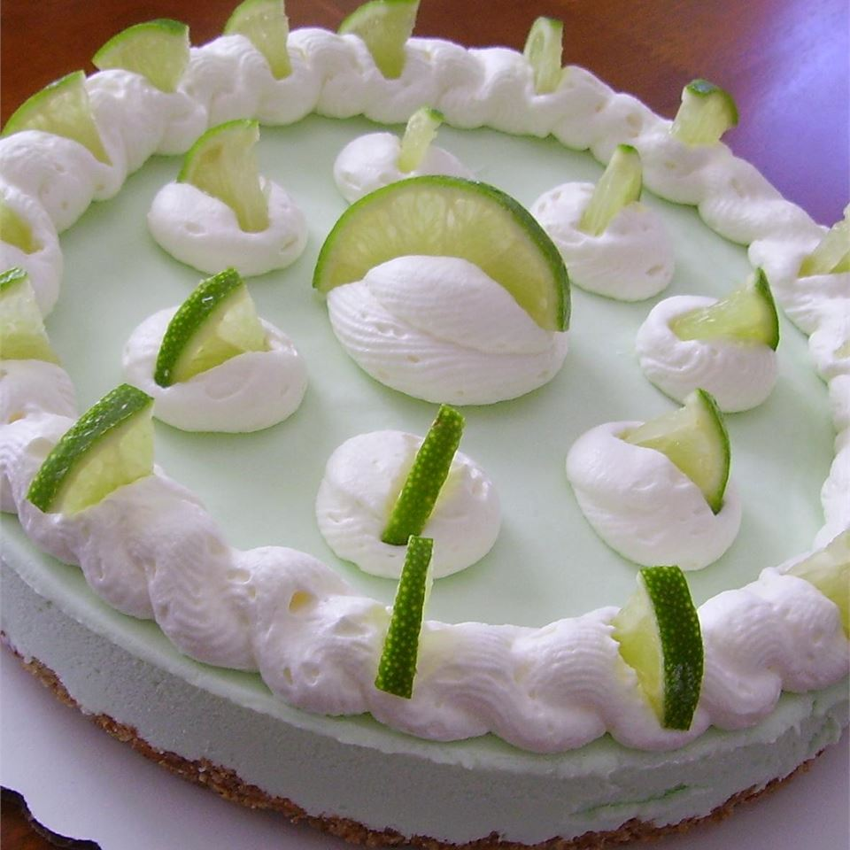

Frozen Margarita Pie

Your favorite cocktail in pie form—what's not to love?
Frozen Margarita Pie is cool and creamy, with a salty-sweet pretzel crust and a frosty filling flavored with
fresh lime juice, tequila, and triple sec!
This creamy, tart, tequila-spiked frozen dessert is exactly what every pool party needs.
Frozen Margarita Pie! Because who needs a cocktail when you can enjoy a frosty piece of spiked pie instead? 😉
Ingredients
- 1 cup finely crushed pretzels
- ¼ cup white sugar
- ⅓ cup margarine, melted
- 1 (14 ounce) can sweetened condensed milk
- ⅓ cup frozen limeade concentrate, thawed
- 2 tablespoons tequila
- 1 tablespoon orange liqueur
- 3 drops green food coloring, or as needed (Optional)
- 1 cup heavy whipping cream
- 1 lime, sliced (Optional)
Steps
- Preheat oven to 375 degrees F (190 degrees C).
- Mix pretzels and sugar together in a bowl; stir in margarine until evenly incorporated. Spoon mixture into a
9-inch pie plate; press into bottom and up sides of plate to form a firm, even crust.
- Bake crust in the preheated oven until edges are lightly browned, about 5 minutes. Cool on a wire rack.
- Mix sweetened condensed milk, limeade concentrate, tequila, orange liqueur, and green food coloring in a
large bowl.
- Beat cream in a glass or metal bowl until soft peaks form. Lift your beater or whisk straight up: the
whipped cream will form soft mounds rather than a sharp peak. Fold whipped cream into sweetened condensed
milk mixture. Spoon filling into cooled crust.
- Cover pie with plastic wrap and freeze until firm, about 4 hours. Let stand for 10 minutes before serving;
garnish with lime slices.